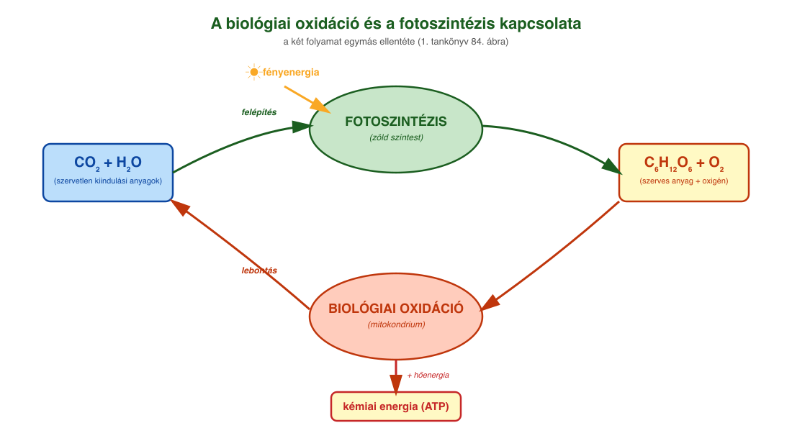
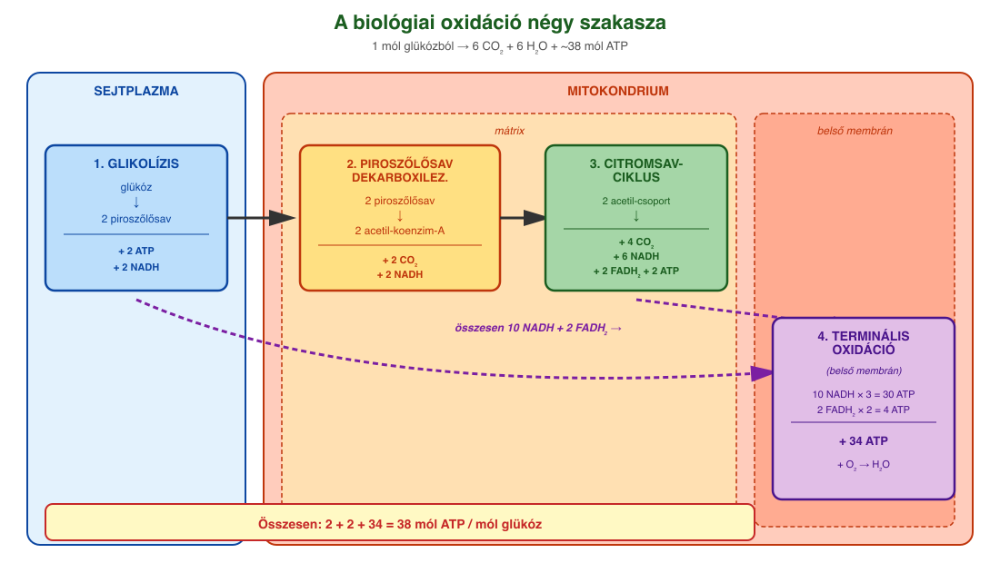
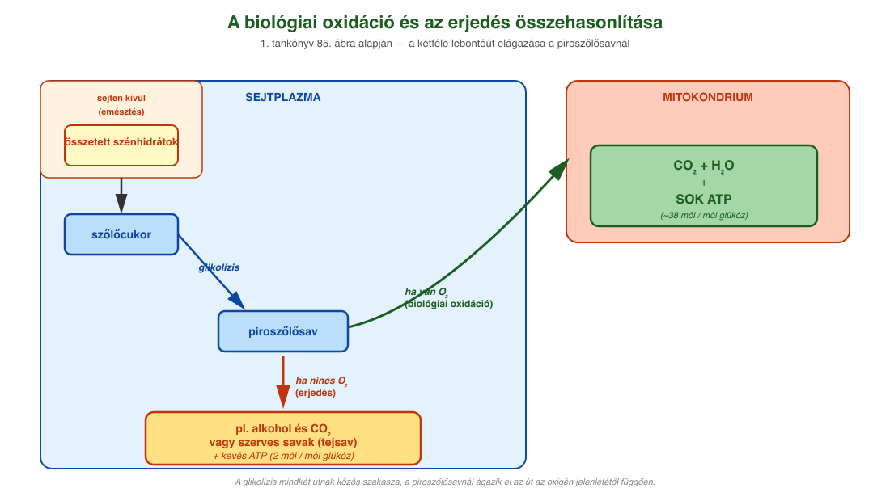

15. Biológiai oxidáció¶
A lebontó folyamatok lényege¶
A lebontó folyamatok során a sejtek nagyobb méretű, magasabb energiaszintű szerves molekulákat alakítanak át kisebb méretű, alacsonyabb energiatartalmú részecskékké. A lebontás során felszabaduló energia egy része ATP képzésére fordítódik, másik része hőenergiává alakul.
A szerves anyagok energianyerés céljából történő lebontása két alapvető úton mehet végbe a sejtekben:
- Oxigén jelenlétében (aerob feltételek mellett) a sejtek többségében zajlik a biológiai oxidáció.
- Oxigén hiányában (anaerob feltételek mellett) képesek egyes élő szervezetek vagy bizonyos szöveti sejtek szerves anyagok lebontásából energiát nyerni erjedéssel.
A biológiai oxidáció lényege¶
A biológiai oxidáció eukarióta sejtek döntő többségében, illetve számos prokariótában is sejtlégzés. A több lépésben zajló biokémiai átalakulás során a szerves anyagok szénatomjai szén-dioxiddá oxidálódnak, miközben hidrogéntartalmuk szállítómolekulákra (NAD⁺ koenzim) kerül. A hidrogénnel feltöltött szállítómolekulák (NADH+H⁺, röviden NADH₂) a terminális oxidációnak nevezett folyamatban egy enzimrendszer segítségével oxidálódnak, miközben hidrogénjük egyesül a légzésből származó oxigénnel (O₂), és vizet képeznek. A teljes folyamat során jelentős mennyiségű ATP keletkezik. Eukarióta sejtekben a biológiai oxidáció színtere a mitokondrium.
A folyamat lényege: az első 3 részfolyamatban a molekulákban lévő H-ek egy része hidrogénszállítókra kerül, míg a 4. folyamatban a H-ek oxidációjával ATP keletkezik.
1. Glikolízis¶
A folyamat első szakasza a glikolízis, melynek enzimjei a sejtplazmában találhatók. A folyamat során a szőlőcukor több egymást követő lépésben három szénatomos piroszőlősavra bomlik. A folyamatban 1 mól glükózból bruttó 2 mól ATP és 2 mól NADH keletkezik.
A glikolízis egyszerűsített egyenlete:
C₆H₁₂O₆ + 2 NAD⁺ + 2 ADP + 2 Pᵢ → 2 CH₃-CO-COOH + 2 NADH₂ + 2 ATP
(szőlőcukor → 2 piroszőlősav)
2. Piroszőlősav dekarboxileződése¶
Aerob feltételek mellett a piroszőlősav oxidációja a mitokondriumban folytatódik. A piroszőlősav egy szén-dioxid-molekula leadásával (piroszőlősav dekarboxileződése) és egy NAD⁺ redukálásával acetilcsoport formájában egy koenzim-A-molekulára kerül, így acetil-koenzim-A jön létre.
Összesítve:
2 CH₃-CO-COOH + 2 KoA + 2 NAD⁺ → 2 CH₃-CO-KoA + 2 CO₂ + 2 NADH₂
3. Citromsavciklus (Szent-Györgyi–Krebs-ciklus)¶
A mitokondrium alapállományában (mátrix) az acetil-koenzim-A a citromsavciklusba kerül. A folyamatban 1 mól acetilcsoport több lépésben oxidálódik 2 mól szén-dioxiddá, a hidrogénatomok pedig 3 mól NAD⁺- és 1 mól FAD- (nukleotid típusú hidrogénszállító molekula) molekulát redukálnak. Közvetve 1 mól ATP is keletkezik a folyamatban.
A citromsavciklus a biológiai oxidáció olvasztótégelye: alapvetően a glükóz lebontásával keletkező acetilcsoportokkal működik, de glükóz hiányában más molekulák is acetilcsoportokká alakíthatók (pl. zsírsavak, aminosavak).
4. Terminális oxidáció¶
Az utolsó lépés a terminális oxidáció, ahol az egy mól glükózból eddig (glikolízis, piroszőlősav oxidációja, citrátkör) keletkezett 10 mól NADH és 2 mól FADH₂ oxidálódik. Az elektronok a mitokondrium belső membránjában található elektrontranszport-rendszeren végighaladva elősegítik a hidrogénionok szállítását a mátrixból a két membrán közötti térbe. Az így létrejött hidrogénionkoncentráció-különbség lesz az ATP-szintézis alapja. A hidrogénionok az ATP-szintáz enzimen keresztül a koncentrációkülönbségnek megfelelően a mátrix felé mozognak. Eközben meghajtják az ATP-szintáz enzimet (forgó motorfehérje!), ami így elegendő energiával rendelkezik, és aktiválja, hogy az ADP-ből és foszfátcsoportból ATP képződjön. Egy NADH-molekula 3 ATP, egy FADH₂ 2 ATP szintéziséhez szükséges energiát biztosít. A folyamat végén az áthaladó hidrogénionok egyesülnek a légzésből származó és az elektronszállító rendszer által aktivált oxigénnel (O₂), és vizet képeznek.
Az ATP-mérleg¶
1 mól glükózból: - a glikolízisben 2 mól ATP, - a citromsavciklusban 2 mól ATP, - a terminális oxidációban pedig — a 10 mól NADH-ból és 2 mól FADH₂-ből — 34 mól ATP keletkezik.
Összesen: 38 mól ATP. A folyamat során az oxigénből víz keletkezik.
Megjegyzések az ATP mennyiségére vonatkozóan:
- A biológiai oxidációban 36, illetve 38 mól ATP is képződhet. Ennek az az oka, hogy a glikolízisben képződő NADH kétféle úton is beléphet a terminális oxidációba.
- Újabb források szerint az aerob légzés során az ATP-hozam nem 36–38 mól, hanem csak kb. 30–32 mól ATP-molekula / 1 mól glükózmolekula. Az elméletileg 38 mól ATP / 1 mól glükóz a sejt élettani feltételei és a transzportfolyamatok okozta veszteségek miatt nem valósul meg. Egy NADH, illetve FADH₂ oxidációja nem 3, illetve 2 ATP-t eredményez a terminális oxidációban, hanem csak 2,5, illetve 1,5 ATP-t.
Szubsztrátszintű foszforiláció: 2 ATP a glikolízisből + 2 ATP (közvetlenül GTP) a citromsavciklusból.
Oxidatív foszforiláció: - 2 NADH + H⁺ a glikolízisből: 2 × 1,5 ATP (ha a glicerin-foszfát transzfer hidrogénatomokat továbbít) vagy 2 × 2,5 ATP (malát–aszpartát transzfer). - 2 NADH + H⁺ a piruvát oxidatív dekarboxileződéséből és 6 a Krebs-ciklusból: 8 × 2,5 ATP. - 2 FADH₂ a Krebs-ciklusból: 2 × 1,5 ATP. - Összesen 4 + 3 (vagy 5) + 20 + 3 = 30 (vagy 32) ATP / glükózmolekula.
A szerves anyagok lebontási útvonalai¶
Más szerves vegyületek is becsatlakoznak a lebontó folyamatokba:
- A zsírok zsírsavakra és glicerinre bomlanak. A páros szénatomszámú zsírsavakból — mintha télisalámit szeletelnénk — csak acetilcsoportok keletkeznek. A páratlan szénatomszámú vegyületek (mint a glicerin) vagy a páratlan szénatomszámú zsírsavak acetilcsoportokká alakítása már több lépést igényel, de a szervezet megvalósítja.
- A fehérjék aminosavakra bomlanak. A C-tartalmú rész piroszőlősavvá vagy acetilcsoporttá alakulhat. A nitrogéntartalmú vegyületek kezelését el kell végezni (nitrogén-anyagcsere) — legegyszerűbb a nitrogéntől ammóniává alakítani, de ez mérgező, ezért a szárazföldi szervezetek karbamiddá vagy húgysavvá alakítják. Az aminosavak nitrogéntartalma karbamiddá, a nukleotidok purinbázisaié pedig húgysavvá alakul, amelyek a vizelettel ürülnek ki.
- A nukleinsavak nukleotidokra bomlanak.
A szerves vegyületek energiatartalma a bennük található C–H-kötések számával egyenesen arányos. Ennek tudatában a legnagyobb energiatartalmúak (energiasűrűségűek) a zsírok, ezt követik a fehérjék, és csak ezután következnek a cukrok.
Erjedés¶
Egyes élő szervezetek, illetve bizonyos szöveti sejtek oxigén hiányában (anaerob feltételek mellett) képesek szerves anyagok lebontásából energiát nyerni erjedéssel.
Alkoholos erjedés. Az élesztőgombákra jellemző. Termékei az etil-alkohol (etanol) és a szén-dioxid. Egy mól szőlőcukor alkoholos erjedése összességében 2 mól ATP képződését eredményezi. Alkoholos erjedéssel bort, sört állítanak elő, és kelt tésztát készítenek. Az erjedést katalizáló enzimek a sejtplazmában találhatók, így ezek a folyamatok ott játszódnak le.
A piroszőlősavból egy dekarboxileződés (szén-dioxid kihasadása) után etil-alkohol keletkezik. A folyamat egyszerűsített egyenlete:
2 CH₃-CO-COOH + 2 NADH₂ → 2 CH₃-CH₂-OH + 2 CO₂ + 2 NAD⁺
Tejsavas erjedés. Ez megy végbe oxigén hiányában a gerincesek intenzíven működő vázizomrostjaiban, a baktériumok és egysejtű gombák is ezzel a folyamattal nyernek energiát. A glikolízist követően a piroszőlősavból tejsav és két mól ATP képződik. A tejsavbaktériumok gazdasági szempontból is jelentősek, mivel közreműködésükkel állítanak elő savanyított élelmiszereket (pl. savanyú káposzta, tejföl, joghurt, sajtok).
Erjedés játszódik le — dekarboxileződés nélkül — a piroszőlősav redukciójával. Ekkor a piroszőlősavból tejsav keletkezik. Egyenlete:
2 CH₃-CO-COOH + 2 NADH₂ → 2 CH₃-CH(OH)-COOH + 2 NAD⁺
Ezekben a folyamatokban 1 mól glükózból csak 2 mól ATP keletkezik, és a szerves termék még tartalmaz C–H-kötéseket, de az oxigén hiánya miatt ezek nem oxidálhatók.
A biológiai oxidáció és az erjedés összehasonlítása¶
| Szempont | Biológiai oxidáció | Erjedés |
|---|---|---|
| Oxigén | szükséges (aerob) | nem szükséges (anaerob) |
| Helye | mitokondrium (a glikolízis a sejtplazmában) | sejtplazma |
| Termékek | CO₂ + H₂O + sok ATP | etil-alkohol és CO₂ vagy szerves savak + kevés ATP |
| ATP / mól glükóz | ~38 mól | 2 mól |
A szervezet anyagcseréje és a környezet¶
Az élőlények környezetüktől függően meg tudják változtatni az anyagcseréjüket. A növények napközben párhuzamosan folytatnak fotoszintézist és biológiai oxidációt. Ekkor az oxigéntermelésük nagyobb mértékű, mint az oxigénfogyasztásuk. Éjszaka viszont csak biológiai oxidációt folytatnak. A mag csíráztatáskor még nem tud fotoszintetizálni, sőt a csíra sejtjei a maghéj miatt oxigént sem tudnak megfelelő mértékben felvenni, ezért egészen a maghéj felrepedéséig alkoholos erjedés megy végbe.
A hasadóélesztőben is eltérő anyagcsere-utak aktiválódnak a környezet hatására. Oxigén hiányában alkoholos erjedést folytat (ezt használjuk ki az alkoholos italok és a kelt tészta készítésénél), oxigén jelenlétében viszont biológiai oxidációt folytat.
Az állati szervezet vázizmai is képesek az oxigénellátottságtól függően eltérően működni: oxigén jelenlétében biológiai oxidációt folytatnak, hiányában tejsavas erjedés történik. Azonban erjedéssel a szervezet nem képes elegendő energiát előállítani, ezért hosszú távon nem viseli el az oxigénhiányt.
Ábrák¶

A két folyamat egymás ellentéte. A fotoszintézis (zöld színtestben) fényenergiát használ, CO₂-ot és H₂O-t alakít szőlőcukorrá és O₂-vé. A biológiai oxidáció (mitokondriumban) a szőlőcukrot és az O₂-t bontja CO₂-ra és H₂O-ra, és kémiai energiát (ATP) szabadít fel. A tankönyv 84. ábrája alapján.

A glükóz teljes lebontása négy szakaszban: 1) glikolízis a sejtplazmában (glükóz → 2 piroszőlősav, 2 ATP, 2 NADH); 2) piroszőlősav dekarboxileződése a mitokondriumban (2 acetil-koenzim-A, 2 CO₂, 2 NADH); 3) citromsavciklus a mitokondrium mátrixában (4 CO₂, 6 NADH, 2 FADH₂, 2 ATP); 4) terminális oxidáció a belső membránon (a NADH és FADH₂ oxidációjával 34 ATP, a végén H₂O keletkezik). Összesen 38 mól ATP / mól glükóz.

A tankönyv 85. ábrája alapján: a szőlőcukor lebontása a sejtplazmában glikolízissel piroszőlősavra. Innen ha van O₂ (biológiai oxidáció), akkor a folyamat a mitokondriumban folytatódik, és CO₂ + H₂O + sok ATP keletkezik. Ha nincs O₂ (erjedés), akkor a sejtplazmában maradva alkohol és CO₂ vagy szerves savak (tejsav) keletkeznek kevés ATP-vel.
Az anyag az 1. tankönyv 80, 81, 82, 83. oldalain található.